NEIGHPalm
Website design and development for an AI-powered security and compliance platform, brought to life through a modular visual language.
Landing page for an AI-powered security and compliance platform.
Visualizing Interconnectivity
For this project, my main challenge was to visualize the product’s interconnected nature, while also creating a distinctive visual language that reflects its technological character.
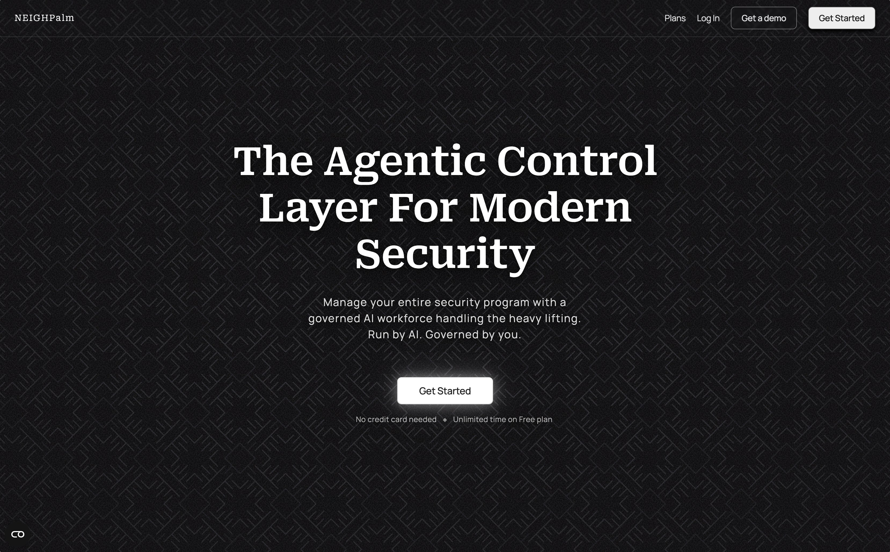
The website presents the platform in three layers, moving from its underlying knowledge base to its integrations and autonomous workers. This progression lets visitors build an understanding of the system one part at a time.
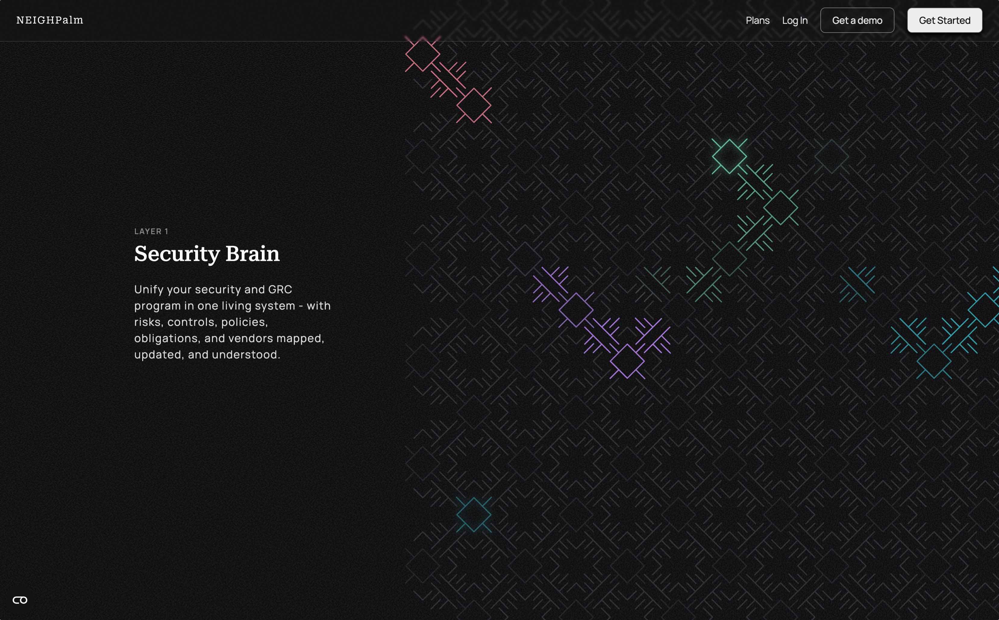
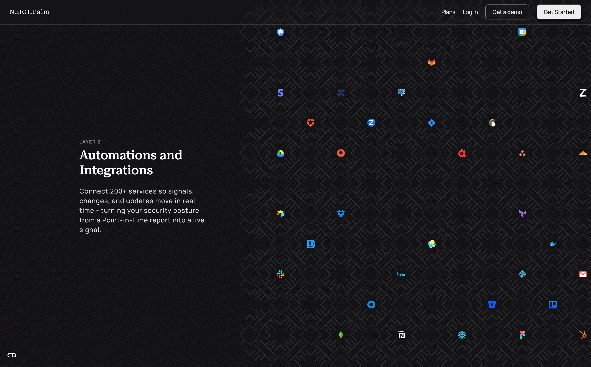
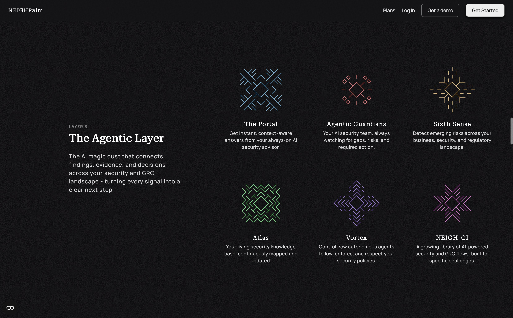
A Connected Visual Language
A repeating geometric motif connects the site’s backgrounds, illustrations, and animations. Its variations represent both the product’s individual components and the connections between them, while giving each section its own character.
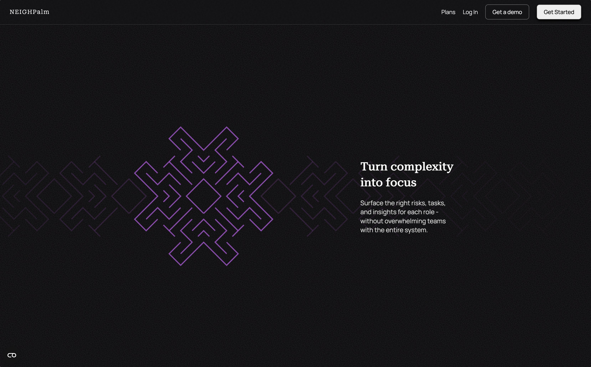
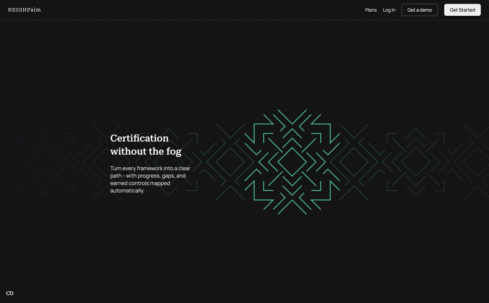
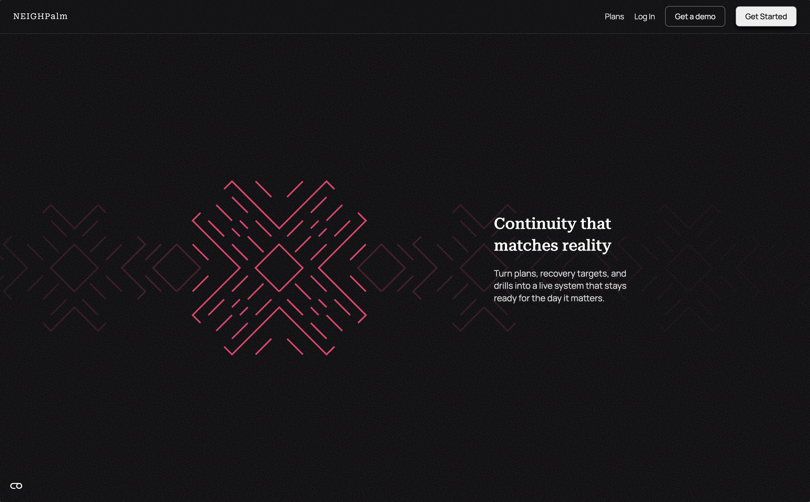
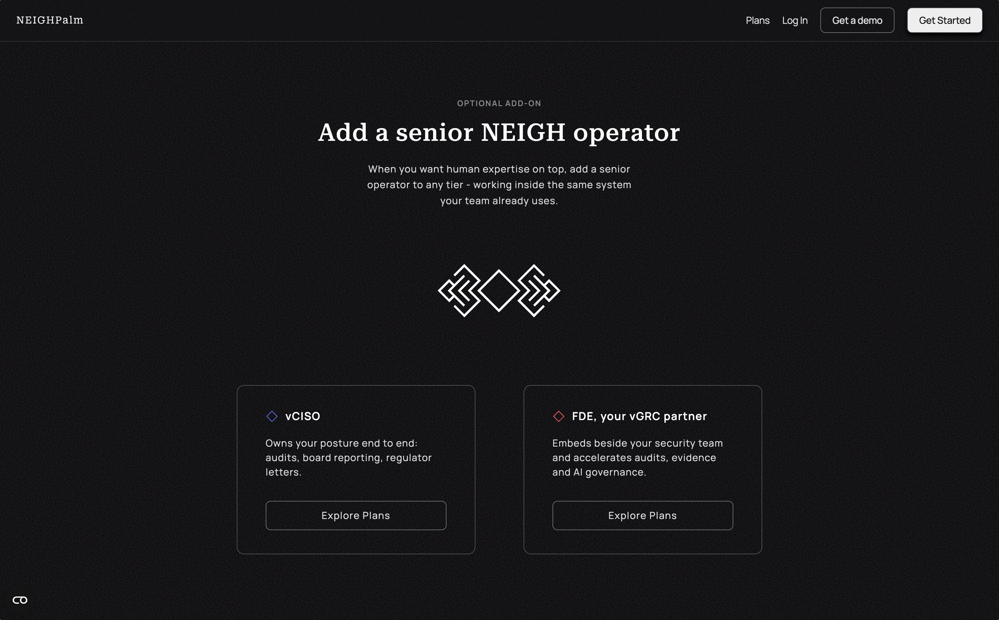
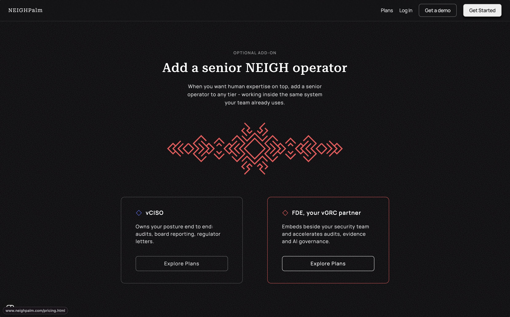
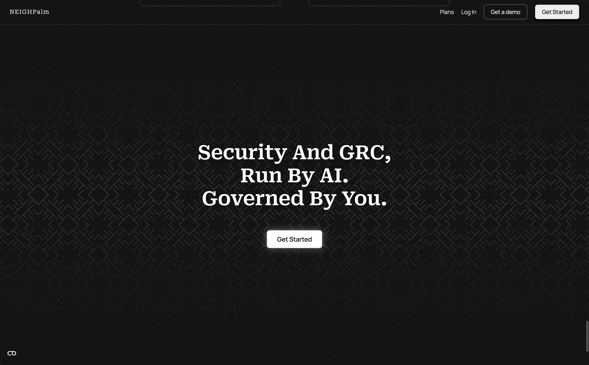
NEIGH
As the consulting company behind NEIGHPalm, NEIGH shares its visual language. For its landing page, I rotated the geometric motif by 45 degrees to convey order and a more traditional consulting approach while maintaining a clear connection between the two.
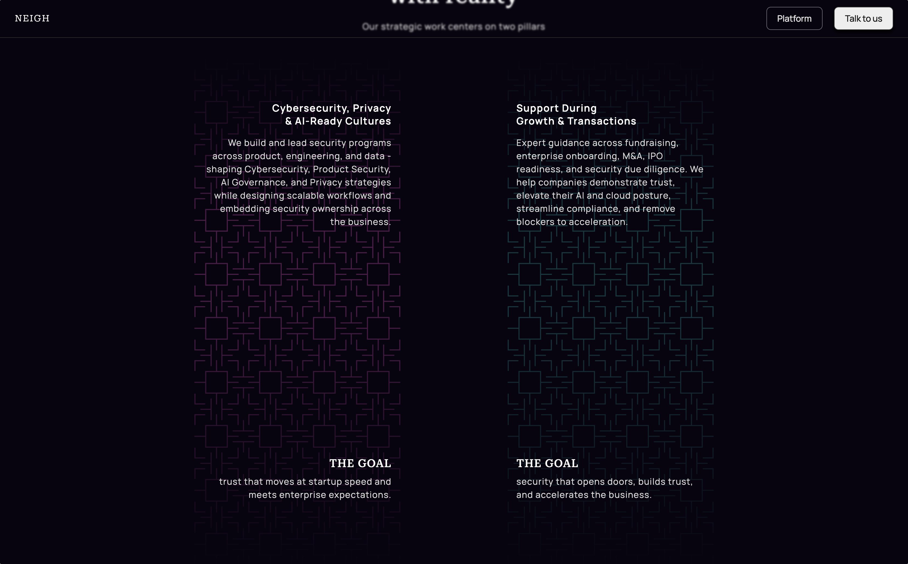
Early Draft Comparison
Early drafts next to the finished screens. Drag the handle to compare.
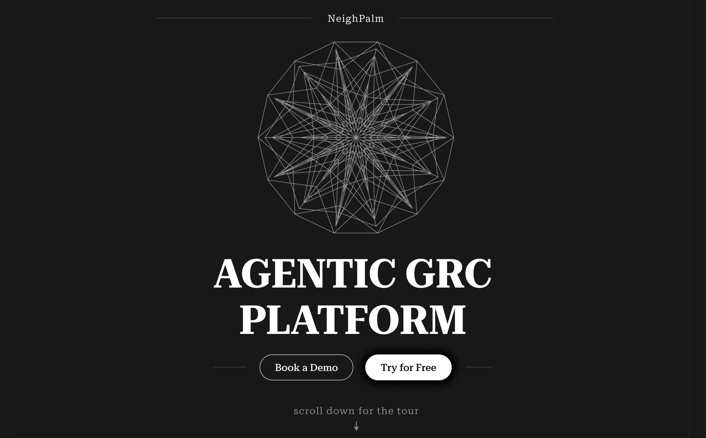
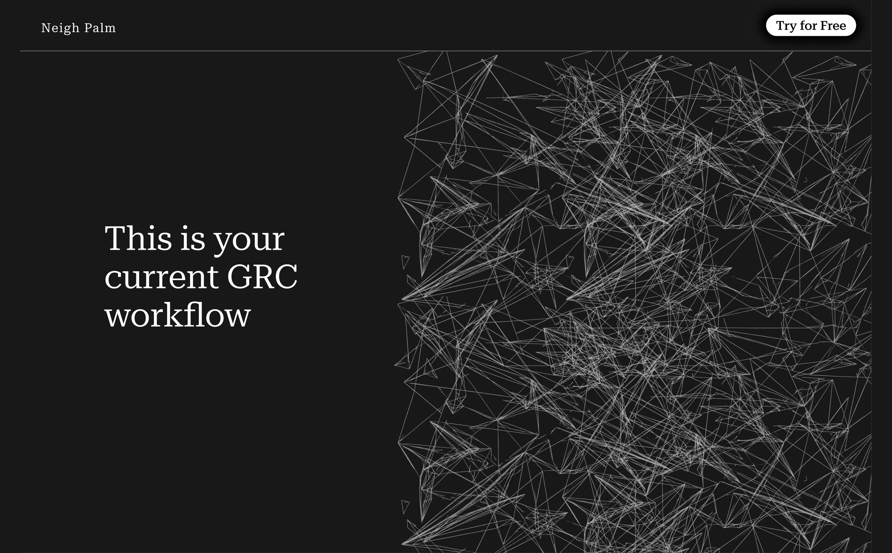
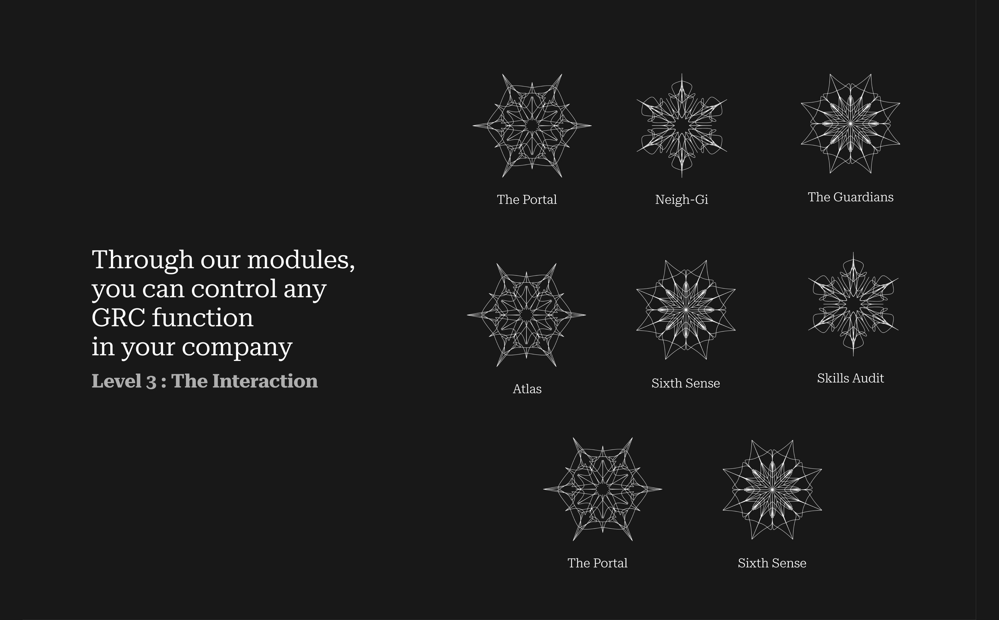